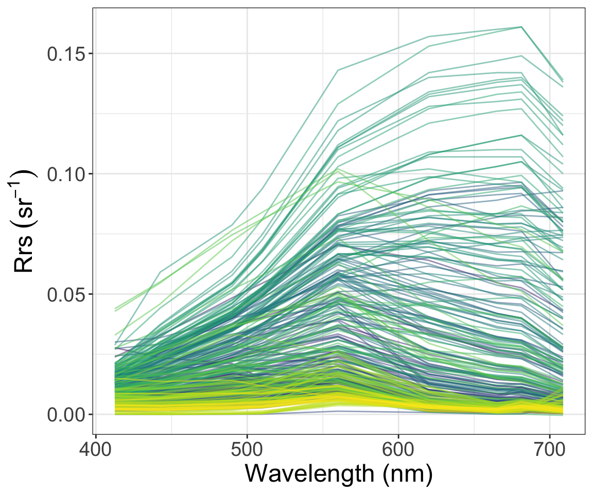
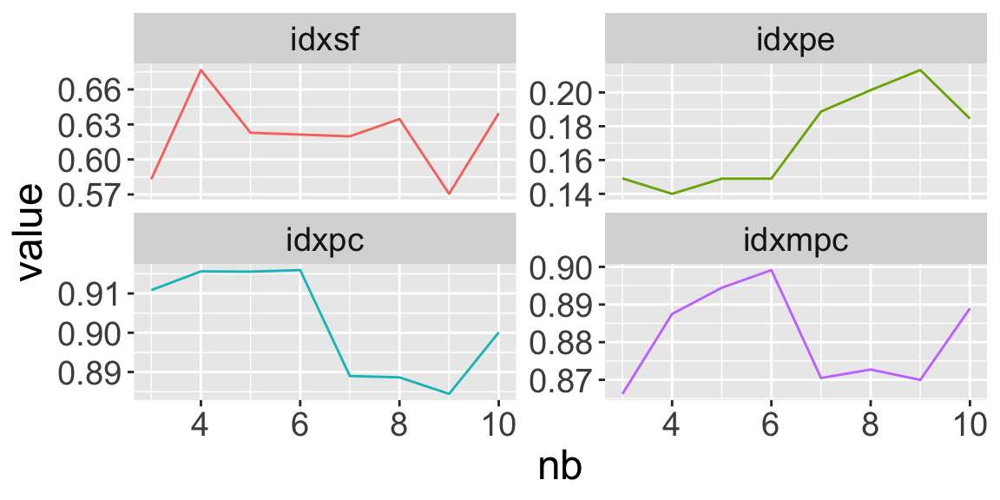

vignettes/Cluster_number_determination.Rmd
Cluster_number_determination.RmdDear users, the four vignettes of FCMm were provided in this package to demonstrate the usage and application to obtain the cluster number, to train the user-defined data set, to apply the default FCMm to new data (such as Chla concentration estimation), and the imagery data.
Here are the step-by-step demos:
This Vignette shows how to use the FCMm package to determine the optimized cluster number about your data set. Here we use our demo data Nechad2015.
Note: we also need package tidyverse to string and data processing.
After that, we subset the Rrs dataframe (named x) and wavelength vector (named wv). It is time to plot the spectra of this set by using function plot_spec_from_df.
Note: The input of plot_spec_from_df should be a matrix or data.frame with colnames that could be transformed into the numeric — as the x-axis of the plot. Since the return of plot_spec_from_df is a ggplot list, you could modify or add it for your purpose (such as add labs or themes).
p.spec <- plot_spec_from_df(x) +
labs(x='Wavelength (nm)',y=expression(Rrs~(sr^-1))) +
theme_bw() +
theme(legend.position='none', text=element_text(size=18))
print(p.spec)
Before optimizing the best cluster number, we have to obtain an FD list produced by function FuzzifierDetermination just as follow
FD <- FuzzifierDetermination(x, wv, stand=F)
summary(FD)
#> Length Class Mode
#> x 3024 -none- numeric
#> x.stand 3024 -none- numeric
#> wv 9 -none- numeric
#> max.m 1 -none- numeric
#> stand 1 -none- logical
#> dmetric 1 -none- character
#> Area 336 -none- numeric
#> m.ub 1 -none- numeric
#> m.used 1 -none- numericFD list contains several result by FuzzifierDetermination:
stand=F
Here I gonna introduce several famous cluster validate metrics such as SIL.F, PE, PC, and MPC.
In brief, these metrics mean the goodness of cluster results. Except for PE, the larger of SIL.F, PC, and MPC, the better of the cluster at that time. If you are more interested in that, please see more details in the document of package ppclust by Zeynel Cebeci and fclust by Paolo Giordani. Package FCMm has been inspired by them a lot, and I’m very grateful.
set.seed(1234)
FD <- x %>%
# sample_n(., size=300) %>%
FuzzifierDetermination(., wv, stand=F)
nb_min <- 3
nb_max <- 10
idxsf <- idxpe <- idxpc <- idxmpc <- seq(nb_min,nb_max,1)
i <- 1
for(nb in nb_min:nb_max){
res <- FCM.new(FD, nb, fast.mode=T) # open the fast mode
# print(res$p.jitter)
tmp <- ppclust::ppclust2(res$res.FCM,otype="fclust")
idxsf[i] <- fclust::SIL.F(tmp$Xca, tmp$U, alpha=1) # optimal with maximum value
idxpe[i] <- fclust::PE(tmp$U) # optimal with minimum value
idxpc[i] <- fclust::PC(tmp$U) # optimal with maximum value
idxmpc[i] <- fclust::MPC(tmp$U) # optimal with maximum value
i <- i + 1
}
dt <- data.frame(nb=seq(nb_min,nb_max,1),idxsf,idxpe,idxpc,idxmpc)
opt.num <- c(apply(dt,2,which.max)[-c(1,3)]+1,apply(dt,2,which.min)[3]+1)
dt %>% reshape2::melt(., id='nb') %>%
ggplot(data=.,aes(x=nb,y=value,group=variable,color=variable)) +
geom_path() +
facet_wrap(~variable, scales='free_y', nrow=2) +
theme(text=element_text(size=18), legend.position='none')
Back to the code, here we assume the best cluster number is ranging from 3 to 10 (maybe out of this range but is so weird to obtain such large number). Then we calculate every validate metrics and record them into their corresponding vectors. Finally, we will obtain the goodness curve of cluster results changing with cluster number.
Note: the process is a bootstrapping way to obtain the objective result. So it will take such a long time. Well! We select 4 as the best cluster number.